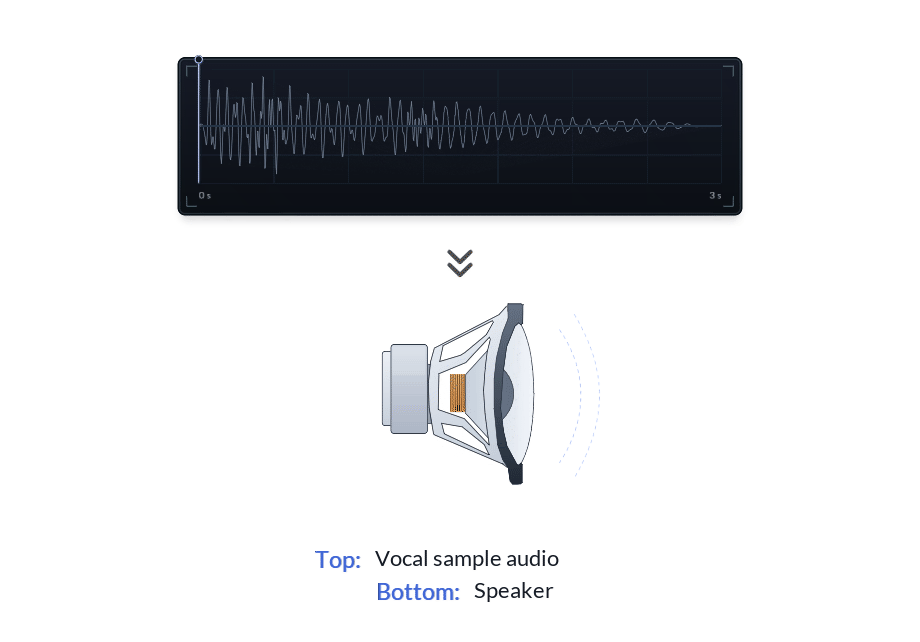
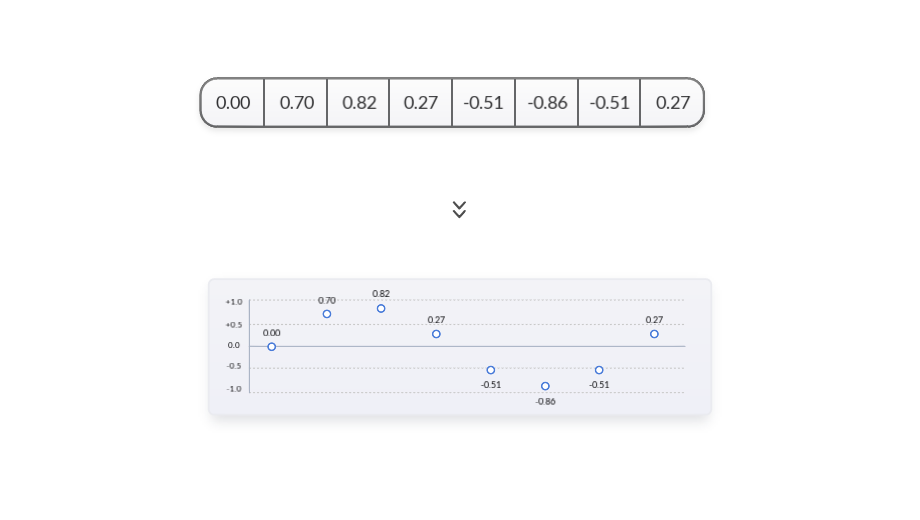
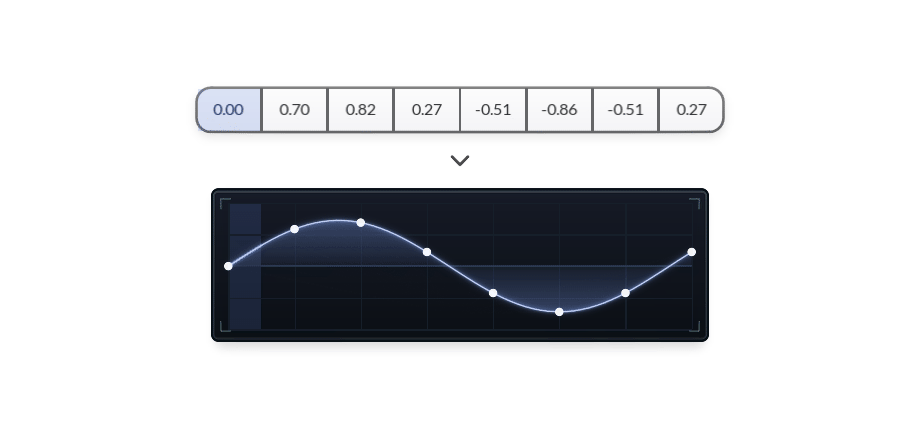
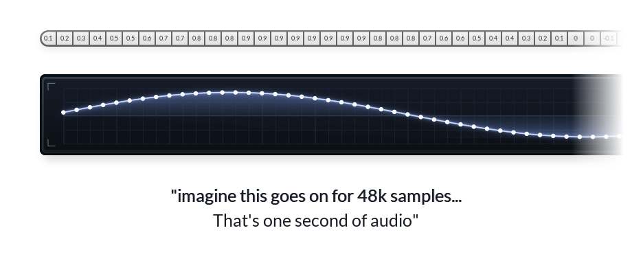
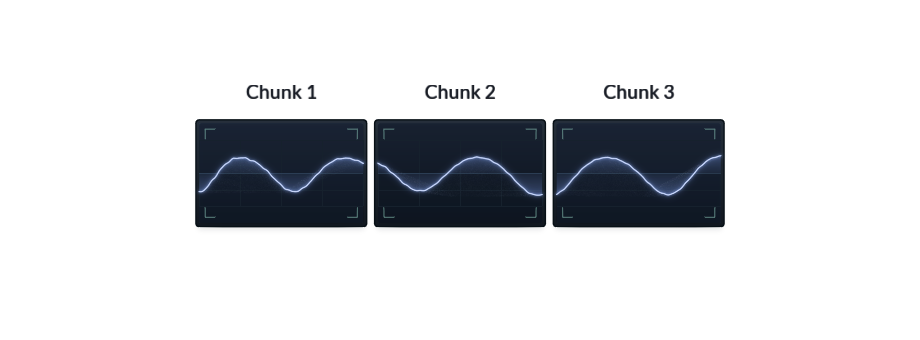
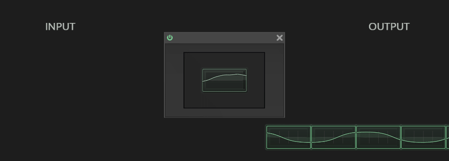
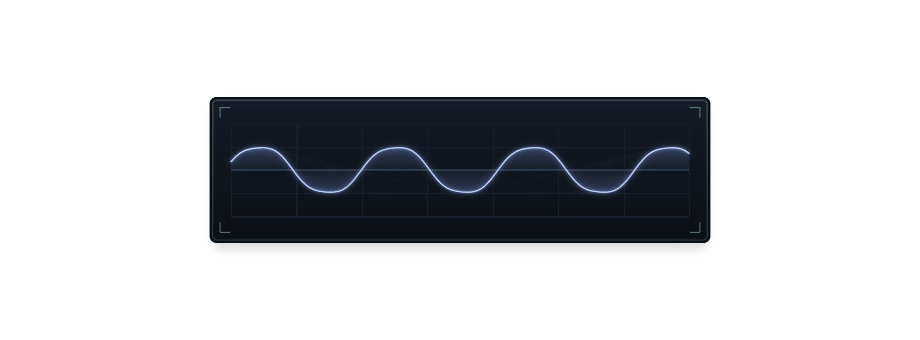
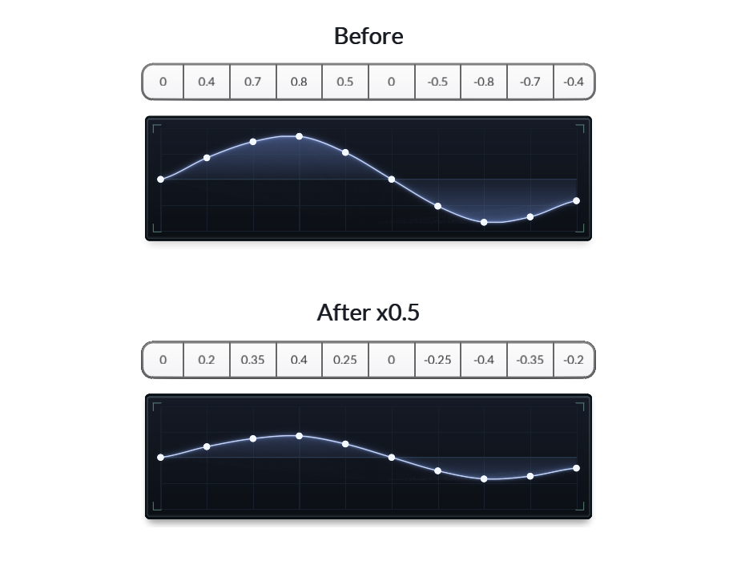
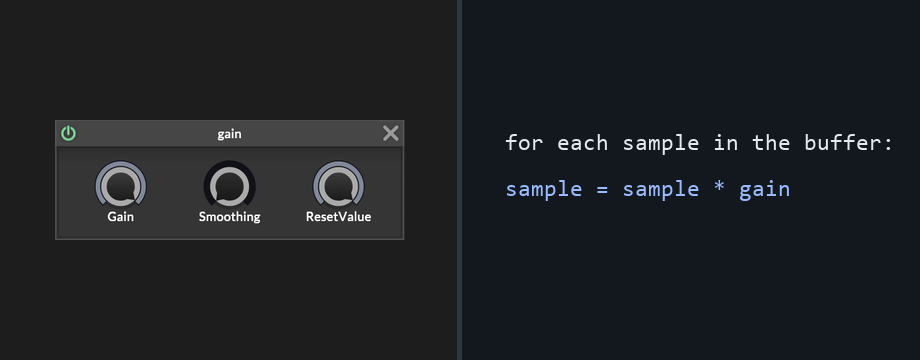
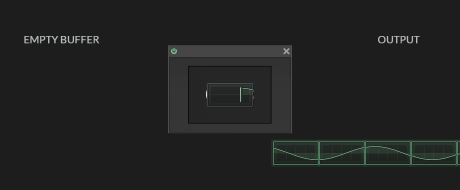

Welcome to the first post in this series on DSP in HISE.
This first part covers four basics: waveforms, samples, buffers, and gain.
Audio coding starts with understanding one simple thing:
A speaker makes sound by vibrating.
That vibration pushes and pulls the air in front of it.
A waveform is a drawing of that vibration over time.

When the line moves up, the speaker moves one way. When the line moves down, it moves the other way.
Real audio moves much faster:

The speaker is still following a changing shape. The animation is slowed down so we can see it.
Samples: points on the waveform
In digital audio, that shape is stored as points.
Each point is a sample: one value at one moment in time.
[0.00, 0.70, 0.82, 0.27, -0.51, -0.86, -0.51, 0.27]
Read the values from left to right and the waveform shape appears.

Positive values sit above the centre line. Negative values sit below it. Zero is the centre.
Here is the same data as a table and a drawing:

The table is the data. The drawing is the same data made visible.
Real audio has far more samples
The tiny example above is only there so every value can be seen.
At 48 kHz, one second of mono audio contains 48,000 samples. Stereo has two streams of that size.

The simplified drawing was useful because we could see every value. Real audio is the same material, packed much more tightly in time.
Buffers: short chunks of audio
HISE handles the audio stream in short chunks called buffers.

The chunk edges are not part of the sound. They do not have to line up with peaks, zero crossings, notes, transients, or waveform cycles.
They are just processing boundaries.

For a normal audio effect, the pattern is:
- take the current buffer
- change the sample values
- pass the buffer onward
Then the next buffer comes through.
Gain: multiplying sample values
A HISE gain node looks like this:
Changing volume means changing the height of the waveform.

If every sample is multiplied by 0.5, every height becomes half as large:

Same shape. Half the height.
Inside the buffer, that is just a repeated operation:

If gain is 1.0, the samples stay the same. If gain is 0.5, the waveform is half as tall. If gain is 0.0, every sample becomes zero, which is silence.
A real gain node has controls, smoothing, and parameter handling around it. The audio operation is still multiplication.
Effects and generators
That is the main idea behind audio effects:
a buffer comes in, the sample values change, and a buffer goes out.
Gain multiplies the samples. Distortion bends or clips them. Delay stores samples and writes them back later.
An oscillator is a generator, so it does not need an incoming waveform. It can write new sample values into an output buffer:

The drawing, the table, the buffer, and the code are all views of the same material: sample values changing over time.
Next: how repeating values become pitch, tone, and spectrum.